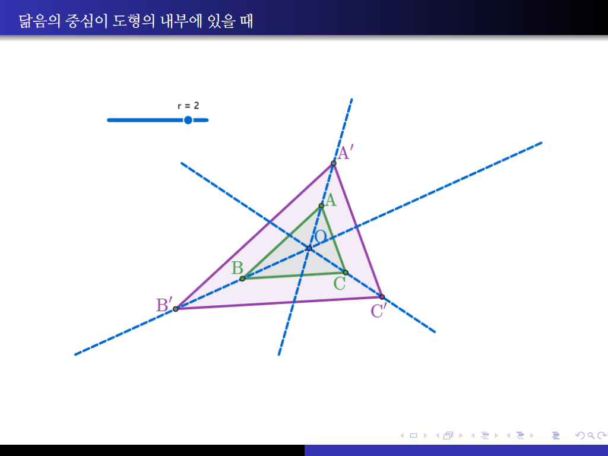
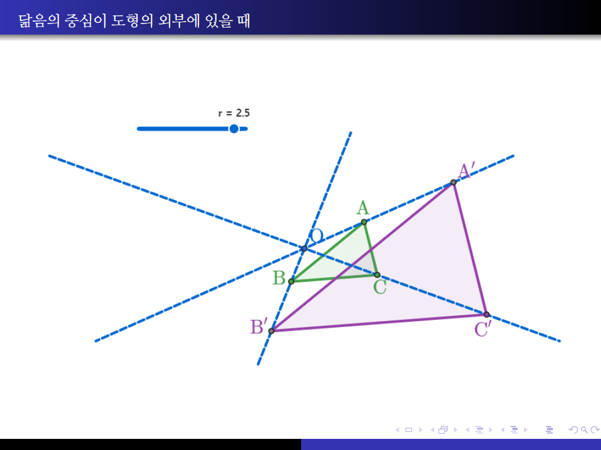
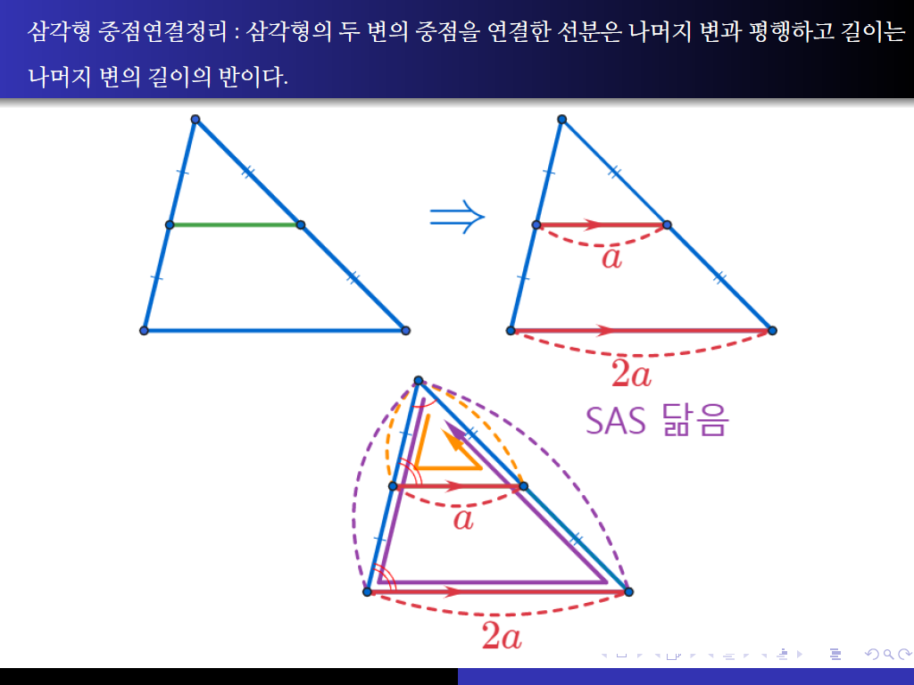

도형의 닮음
평면도형의 닮음
[강의영상]
닮음의 중심
[강의영상]
닮음의 중심이 도형의 내부에 있을 때
[강의영상]

닮음의 중심이 도형의 외부에 있을 때
[강의영상]

길이가 변하는가?
[강의영상]
세 개의 평행선 사이에 선분들의 비
[강의영상]
중점연결정리 : 삼각형의 두 변의 중점을 연결한 선분은 나머지 변과 평행하고 길이는 나머지 변의 길이의 반이다.
[강의영상]

중점연결정리의 역 : 삼각형의 한 변의 중점을 지나서 다른 한 변에 평행한 직선은 나머지 한 변의 중점을 지난다.
[강의영상]
무게중심의 이해
[강의영상]
삼각형의 두 중선은 서로를 2 대 1로 나눈다.
[강의영상]
세 중선은 한 점에서 만난다.
[강의영상]